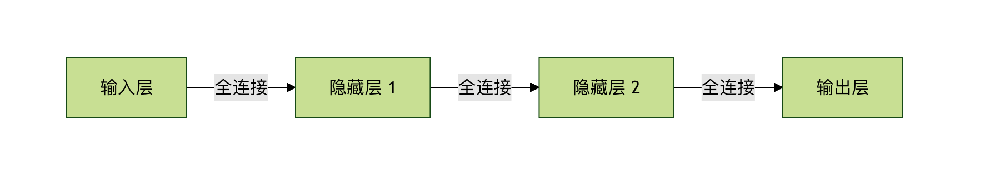
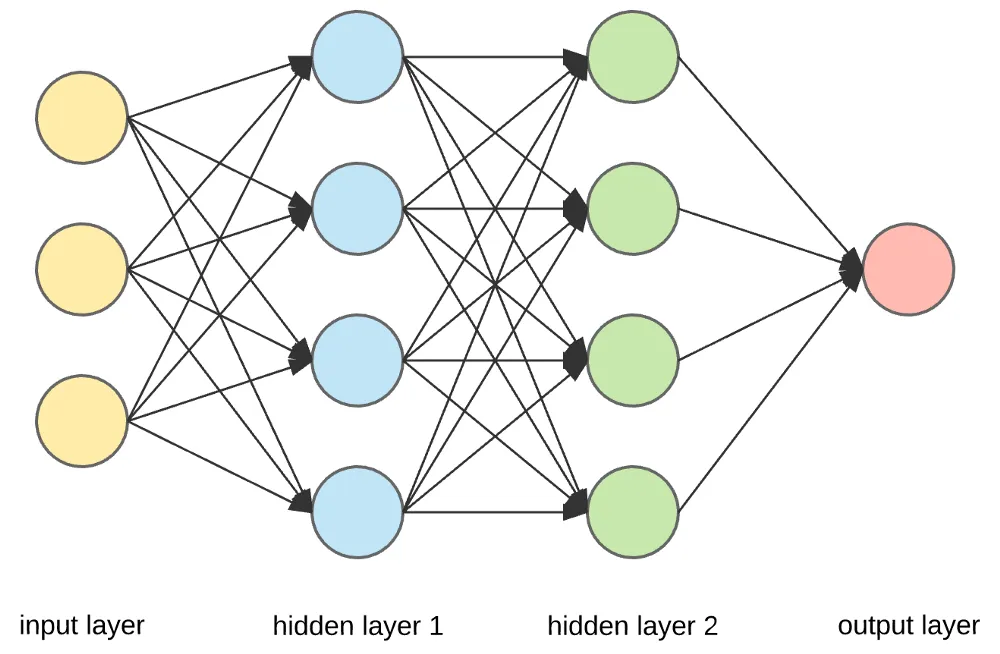
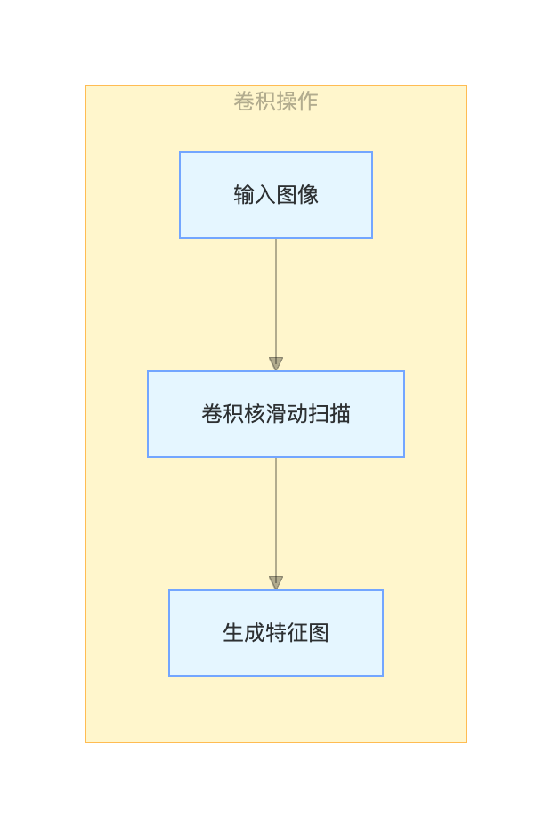
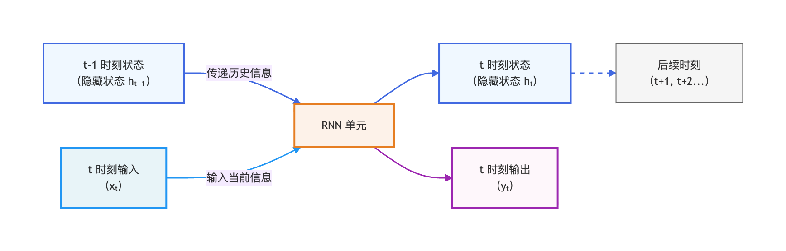
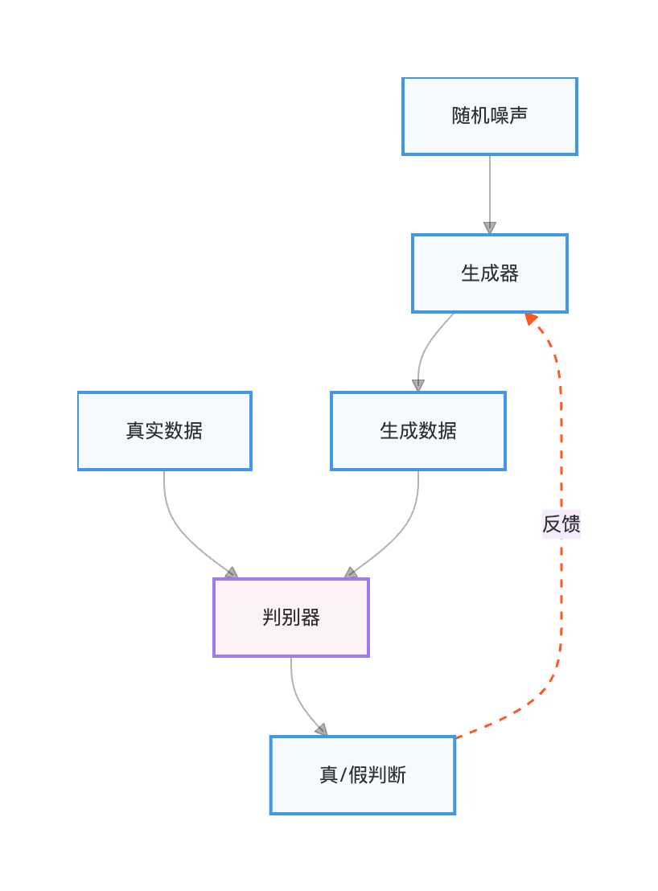

代表的なネットワークタイプ
想像してみてください。私たちが子供に猫と犬を見分けることを教えているとします。
最初に、たくさんの猫と犬の写真を見せて、「これは猫、これは犬」と教えます。徐々に子供の脳はこれらの写真から規則性を学び取ります。猫の耳は通常尖っていて、顔は比較的丸く、犬の耳は垂れていることもあり、顔はより長い。このプロセスは、本質的には次のとおりです。特徴を学習すること和パターンを構築すること。

深層学習は、機械学習の強力な一分野であり、その核心はコンピュータにこのプロセスを模倣させることです。多層のニューラルネットワークを構築することで、機械が大量のデータから自動的に学習し、複雑な特徴を抽出できるようにし、最終的に画像認識、言語理解、トレンド予測などの高度なタスクを実現します。そして、タスクによって異なる構造のネットワークが必要です。本稿では、最も中心的で一般的な深層学習ネットワークのタイプを紹介し、それらの設計思想と代表的な応用を理解していきます。
深層学習ネットワーク
| 中国語の正式名称 | 英語の正式名称 | 略称 |
|---|---|---|
| 人工ニューラルネットワーク | Artificial Neural Network | ANN |
| 畳み込みニューラルネットワーク | Convolutional Neural Network | CNN |
| リカレントニューラルネットワーク | Recurrent Neural Network | RNN |
| 長短期記憶ネットワーク | Long Short-Term Memory | LSTM |
| ゲート付きリカレントユニット | Gated Recurrent Unit | GRU |
| 生成対抗ネットワーク | Generative Adversarial Network | GAN |
| トランスフォーマー | Transformer | Transformer |
| オートエンコーダー | Autoencoder | AE |
| 変分オートエンコーダー | Variational Autoencoder | VAE |
| 深層信念ネットワーク | Deep Belief Network | DBN |
| グラフニューラルネットワーク | Graph Neural Network | GNN |
ニューラルネットワークの基礎と全結合ネットワーク
さまざまなネットワークを詳しく見る前に、最も基本的なモデルを理解する必要があります——全結合ネットワーク、別名多層パーセプトロン。
核心となる考え方：あらゆるものが接続可能
全結合ネットワークは深層学習の中で最も直接的なアーキテクチャです。名前の通り、各層のすべてのニューロンは隣接する層のすべてのニューロンと接続されています。

これは非常に密集した情報処理ネットワークと考えることができます。データは入力層から入り、複数の隠れ層での変換を経て、最終的に出力層から結果を得ます。

代表的な応用と限界
応用：その強力な適合能力により、FCNは構造化データ（表形式データ、例えば住宅価格予測における住宅面積、立地、部屋数など）の処理に非常に適しています。
実例
import torch.nn as nn
class SimpleFCN(nn.Module):
def __init__(self, input_size, num_classes):
super(SimpleFCN, self).__init__()
# ネットワーク層を定義
self.fc1 = nn.Linear(input_size, 128) # 最初の隠れ層
self.relu = nn.ReLU() # 活性化関数
self.fc2 = nn.Linear(128, 64) # 2番目の隠れ層
self.fc3 = nn.Linear(64, num_classes) # 出力層
def forward(self, x):
x = self.fc1(x)
x = self.relu(x)
x = self.fc2(x)
x = self.relu(x)
x = self.fc3(x)
return x
# 入力は100次元の特徴量で、10クラス分類を行うと仮定
model = SimpleFCN(input_size=100, num_classes=10)
限界：画像や音声などのグリッド状データを扱う場合、FCNは大きな課題に直面します。画像内のピクセルは空間的に強く相関していますが、FCNはこの空間構造を無視して画像を一次元ベクトルに平坦化して処理するため、パラメータ数が爆発し、有効な空間的特徴を学習することが難しくなります。
畳み込みニューラルネットワーク —— コンピュータビジョンの基盤
画像処理の問題を解決するために、畳み込みニューラルネットワークが登場しました。これによりコンピュータビジョンの分野は一変しました。
核心となる考え方：局所的な知覚とパラメータ共有
CNNの設計は生物の視覚野から着想を得ており、その二大核心となる考え方は次の通りです。
- 局所的な知覚：FCNのようにニューロンを画像全体に接続するのではなく、CNNの各ニューロンは画像の小さな局所領域（例：3x3や5x5のピクセルブロック）。これは画像内の隣接ピクセルほど関連性が強いという特性により適合しています。
- パラメータ共有：同じ畳み込みカーネル（またはフィルター）を画像の異なる位置でスライド走査させ、同じ種類の特徴（エッジやテクスチャなど）を抽出します。これによりネットワークのパラメータが大幅に削減されます。

主要な構成要素と代表的な応用
典型的なCNNは以下の構成要素を積み重ねてできています。
- 畳み込み層：畳み込みカーネルを使って特徴を抽出します。
- プーリング層（例：最大プーリング）：特徴マップをダウンサンプリングしてデータ量を減らし、特徴の不変性を高めます。
- 全結合層：ネットワークの最後で、学習した分散表現特徴をサンプルのラベル空間にマッピングします。

応用：画像分類、物体検出、顔認識など、ほぼすべてのコンピュータビジョンタスクに使用されます。
実例
class SimpleCNN(nn.Module):
def __init__(self, num_classes=10):
super(SimpleCNN, self).__init__()
self.conv1 = nn.Conv2d(in_channels=3, out_channels=16, kernel_size=3, padding=1)
self.pool = nn.MaxPool2d(kernel_size=2, stride=2)
self.conv2 = nn.Conv2d(16, 32, 3, padding=1)
self.fc1 = nn.Linear(32 * 8 * 8, 256) # 2回のプーリング後、特徴マップのサイズが8x8になると仮定
self.fc2 = nn.Linear(256, num_classes)
def forward(self, x):
x = self.pool(nn.functional.relu(self.conv1(x))) # 畳み込み -> 活性化 -> プーリング
x = self.pool(nn.functional.relu(self.conv2(x)))
x = x.view(-1, 32 * 8 * 8) # 特徴マップを一次元ベクトルに平坦化
x = nn.functional.relu(self.fc1(x))
x = self.fc2(x)
return x
リカレントニューラルネットワーク —— 系列データを扱う専門家
言語、音声、時系列など、前後の順序に依存関係があるデータを扱うには、過去の情報を記憶できるネットワークが必要です。それがリカレントニューラルネットワークです。。

核心となる考え方：記憶メカニズムの導入
RNNの核心はそのリカレント構造にあります。ネットワークは現在の入力を処理する際、現在の入力と前の時刻の隠れ状態を組み合わせて、現在の出力と次の時刻に渡す隠れ状態を決定します。これは、文章を読んでいるときに、現在の単語の意味を理解するために前に読んだ単語に依存するのと似ています。

変種と代表的な応用
基本的なRNNには長期的依存関係の問題があり、長い系列の情報を学習するのが困難です。そのため、2つの重要な変種が生まれました。
- 長短期記憶ネットワーク：精巧なゲート機構（入力ゲート、忘却ゲート、出力ゲート）を通じて、重要な情報を選択的に記憶し、不要な情報を忘れることで、長い系列の依存関係の問題を効果的に解決します。
- ゲート付きリカレントユニット：LSTMの簡略化版で、構造がよりシンプルで計算効率が高く、多くのタスクで同等の性能を発揮します。
応用：機械翻訳、テキスト生成、音声認識、株価予測。
実例
class SimpleRNN(nn.Module):
def __init__(self, vocab_size, embed_size, hidden_size, num_classes):
super(SimpleRNN, self).__init__()
self.embedding = nn.Embedding(vocab_size, embed_size) # 単語埋め込み層
self.rnn = nn.RNN(input_size=embed_size, hidden_size=hidden_size, batch_first=True)
self.fc = nn.Linear(hidden_size, num_classes)
def forward(self, x):
# x の形状: (batch_size, sequence_length)
x = self.embedding(x) # 埋め込み後: (batch_size, seq_len, embed_size)
_, h_n = self.rnn(x) # h_n は最後のタイムステップの隠れ状態
out = self.fc(h_n.squeeze(0)) # 最後の状態を使って分類
return out
生成対抗ネットワーク —— 学習から創造へ
前述のネットワークが識別モデル（データを区別することを学習する）であるならば、生成対抗ネットワークは生成モデル（データを創造することを学習する）の傑出した代表です。

核心となる考え方：競争の中で進化する
GANはゲーム理論から着想を得ています。GANは互いに対抗する2つのネットワークで構成されます。
- 生成器：偽造者のようなもので、本物のデータの分布を学習し、本物と見分けがつかない新しいデータを生成することを目的とします。
- 識別器：鑑定士のようなもので、入力データが本物のデータセット由来か生成器由来かを正確に区別することを目的とします。
両者は絶え間ない対抗訓練の中で共に成長します。生成器はよりリアルなデータを生成して識別器を欺こうと努力し、識別器は識別能力を高めようと努力します。最終的には、生成器は高品質な新しいデータを生成できるようになります。

代表的な応用
応用：画像生成、画像超解像、スタイル変換、データ拡張。
実例
for epoch in range(num_epochs):
# 1. 識別器の学習：本物データを本物と、生成データを偽物と判定する能力を最大化
real_data = get_real_data()
noise = generate_random_noise()
fake_data = generator(noise).detach() # detachに注意。生成器が更新されないようにする
d_loss_real = criterion(discriminator(real_data), real_labels)
d_loss_fake = criterion(discriminator(fake_data), fake_labels)
d_loss = d_loss_real + d_loss_fake
d_loss.backward()
optimizer_D.step()
# 2. 生成器の学習：識別器が生成データを偽物と判定する能力を最小化（つまり識別器を騙す）
noise = generate_random_noise()
fake_data = generator(noise)
g_loss = criterion(discriminator(fake_data), real_labels) # 識別器に生成データが本物だと思わせる
g_loss.backward()
optimizer_G.step()
まとめと比較
| ネットワークタイプ | 核心となる考え方 | 得意とするデータタイプ | 代表的な応用 |
|---|---|---|---|
| 全結合ネットワーク | 全体接続、密なフィッティング | 構造化データ（テーブル） | 住宅価格予測、信用スコアリング |
| 畳み込みニューラルネットワーク | 局所受容野、パラメータ共有 | グリッドデータ（画像） | 画像分類、物体検出 |
| リカレントニューラルネットワーク | 時系列依存、記憶状態 | シーケンスデータ（テキスト、時系列） | 機械翻訳、音声認識 |
| 生成的敵対ネットワーク | 敵対的ゲーム、データ生成 | 実データに類似したデータを生成するために使用 | 画像生成、スタイル変換 |
クリックしてノートを共有
<p style="font-size:14px;">ノートはこの記事の内容を拡張したものである必要があります！</p><br> <p style="font-size:12px;"><a href="../tougao.html" target="_blank">記事投稿はこちらをクリック</a></p> <p style="font-size:14px;"><a href="../w3cnote/runoob-user-test-intro.html" target="_blank">登録招待コードの取得方法</a></p> <h3 class="text-muted"><i class="fa fa-info-circle" aria-hidden="true"></i> ノートを共有する前に<a href=";.html" class="runoob-pop">ログイン</a>が必要です！</h3> <p><a href="../w3cnote/runoob-user-test-intro.html" target="_blank">登録招待コードの取得方法</a></p>